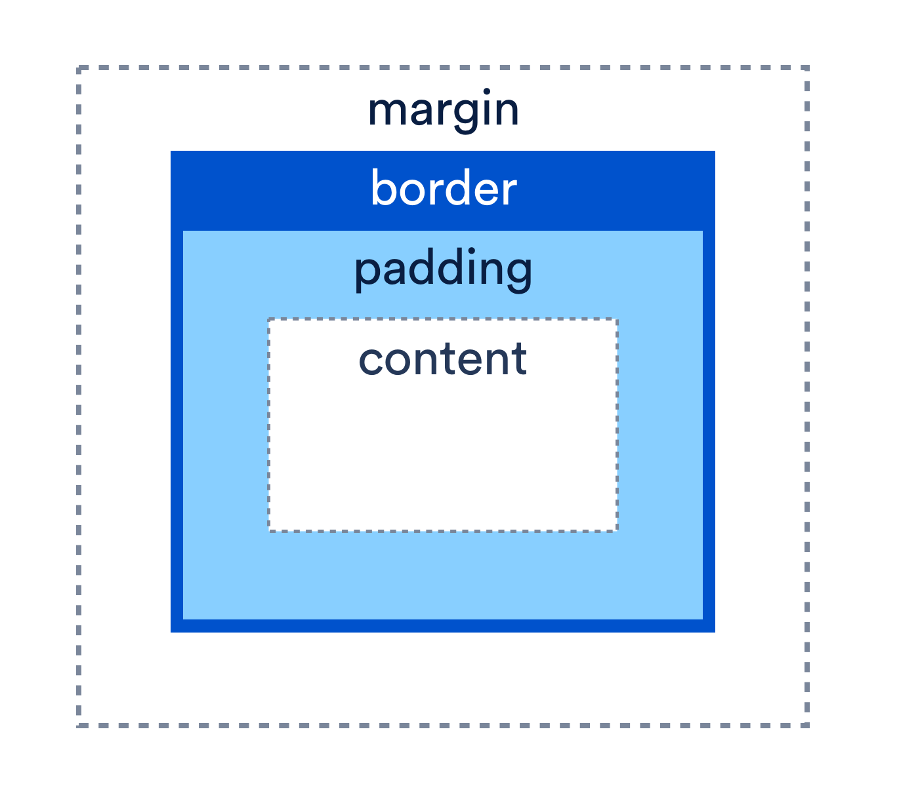

Structure, Phrasing and Display
Block elements appear on the screen as if they have a line break before and after them. A block-level element always starts on a new line. (eg. "p" and "h1") An inline element does not start on a new line and only takes up as much width as necessary. (eg. "a" and "span")
The display property specifies how an element will be displayed. The different settings include "display: none," "display: flex," and "display: in-line".
Box Model
The CSS Box Model is like an invisible box that wraps around each HTML element. It consists of: margins, borders, padding, and the actual content. The box model can be changed with the box-sizing property in CSS because the property already includes the padding and border in an element's total width and height.

Background Images
The differences between images on the page inside img tags and images that are loaded through CSS as background images are that images on the page inside img tags are used if you want to print your page or if you want your browser to scale to render the image in proportion to text size. You use CSS background images if the image is not part of the content.